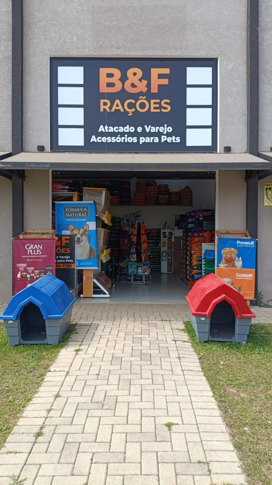

Conheça melhor a proposta da loja e o posicionamento que agora está refletido em todo o site.

A B&F Rações é uma loja local especializada em ração para cães e gatos, com atendimento rápido, foco em praticidade e presença física em Santa Terezinha.
O novo posicionamento do site reforça exatamente isso: uma empresa acessível, confiável e preparada para atender tanto quem compra ocasionalmente quanto quem precisa de reposição constante.
Mais do que listar produtos, a proposta é facilitar a decisão e aproximar a loja das buscas reais feitas no Google por moradores de Fazenda Rio Grande.